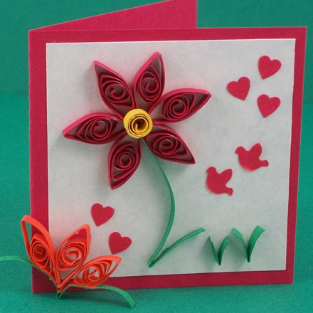
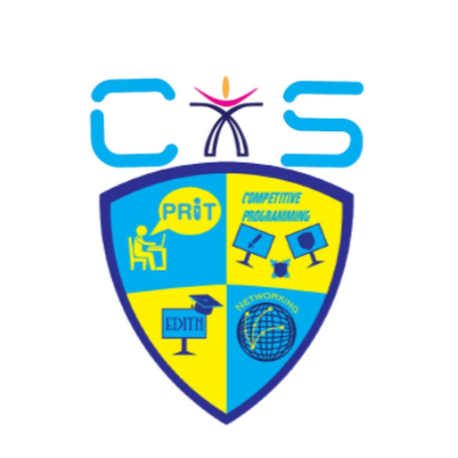

About me
Welcome to my personal website! I am Karan Kishore, a driven and accomplished college student
currently pursuing B. Tech CSE at IIITDM, Kancheepuram. I am deeply passionate about ML, Web Development and allied fields and I have consistently been recognized as a top performer in my academic pursuits.
As a second-year college student, I am eager to learn and grow, and I am committed to staying up-to-date with the latest developments and emerging trends in my field. Through my coursework and extracurricular activities, I am honing my skills in algorithm design, computer architecture and ethical hacking. I am currently interning in Samsung PRISM.
My website is designed to showcase my work, my insights, and my personality. Here you will find a collection of my academic achievements, research projects, and extracurricular activities. I hope to provide you with valuable information and inspiration, and to give you a glimpse into who I am as a person and a scholar.
I believe in consistency and smart work, and I strive to live these values in everything I do. I am passionate about making a positive impact in the world. Thank you for visiting my website, and please feel free to contact me if you have any questions or if you are interested in connecting. I look forward to hearing from you!
Ongoing College life
Uncountable memories and realizations, and yet more to come.
I love diving deeper into any tech whenever I get a chance.
I would always cherish my acquiantances that I've built in this place
throughout.
It has been a wonderful place to shape and hone my skills.
My family
With whom I can be completely myself
It is the strong support system that brings out
my potential.
No matter how busy I am with academics or other work, the
unconditional love and life lessons that my family has taught me
keeps me motivated to do more.
Hobbies and Co-curricular Activities
Chess

I love mindgames, especially something that is challenging.
And that's why chess has been my favourite indoor game.
I still have my passion for it and won several competitions while at school.
Art and Crafts

Though digital screens occupy a significant part our lives,
there's always something special that happens when you use your hands
to create meticulous details
YCIS
Been a part of YCIS (Young Communtarian of Indian Schools in Oman)
aimed at more than 60 hours of social service towards the needy, environment and society.
Joint Core at CS Club

Currently part of CS Club, EdiTH(Education Information Technology and Hardware). Condcuted a workshop on Hugo.
Margdarshan
Part of editing team in making the newsletter of the institute.